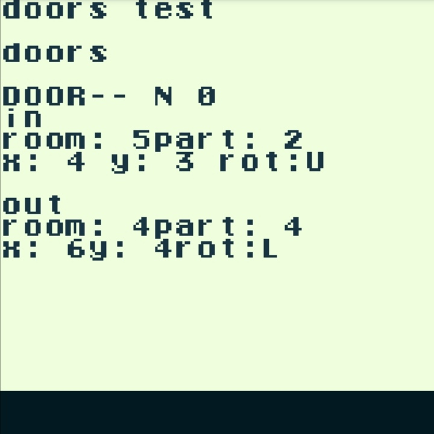
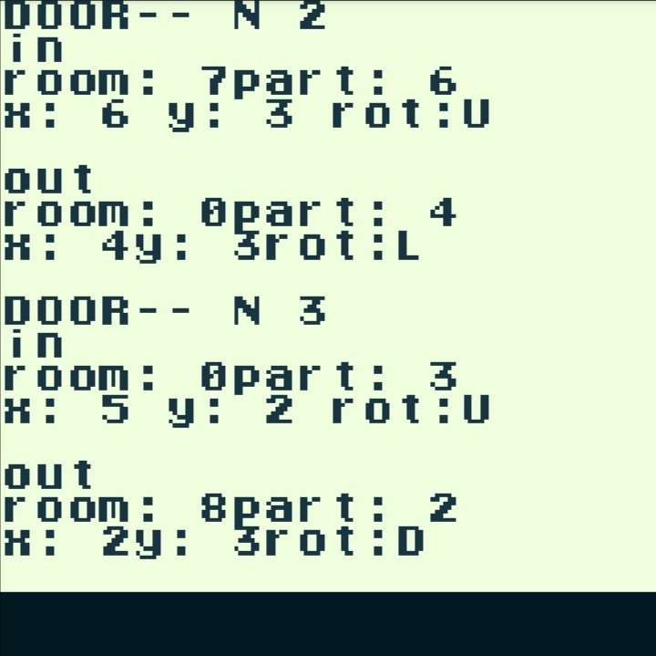

Este era mi level desing, como explique lo que quise hacer es un laberinto de puertas iterconectadas.
En resumen mi primera vez usando structs y si funcionan xD, pero quieres ver el sudoku o no?
ahora vamos a analizar como se compone una puerta, básicamente una puerta conecta dos habitaciones una de entrada y otra de salida, además tiene que tener los atributos de posición en X y Y la rotación, así que tenía que pensar como almacenar dicha puerta antes de continuar con la implementación del generado. Casi siempre trataba de evitar el uso de una estructura además de variables temporales o dinámicas , porque pensaba que el Gameboy no la podría soportarlo, pero resulta que si puede así que luego de unas pruebas lo hice de esa manera
así hice lo siguiente :
typedef struct {
UBYTE room_id;
UBYTE part_id;
UBYTE x_pos;
UBYTE y_pos;
UBYTE rot;
}Door;
typedef struct {
Door in_door;
Door out_door;
}Door_conection;
Y con estos 2 objetos sería con lo que trabajaría de aquí en adelante
para generar las conexiones se me ocurrió el siguiente algoritmo :
//desde una habitación inicial
>crear una puerta que apunte a una habitación aleatoria diferente a la actual
>ir a esa habitación y crear su par (la puerta de regreso)
//Aquí tenemos la primera Door_conection, luego
>crear una puerta que apunte a una habitación aleatoria diferente a la actual y a la anterior
>ir a esa habitación y crear su par
>repetir hasta que todas las habitaciones estén conectadas
así tenemos finalmente :
UBYTE diferent_rand(UBYTE val,UBYTE range){
UBYTE rand_value=val;
while(rand_value==val){rand_value=rand()%range;}
return rand_value;
}
void create_new_door_node(UBYTE init_part,UBYTE destine_room,UBYTE destine_part){
Doors[doors_conected].in_door.room_id=current_room;
Doors[doors_conected].in_door.part_id=init_part;
Doors[doors_conected].out_door.room_id=destine_room;
Doors[doors_conected].out_door.part_id=destine_part;
doors_conected++;
check_conection[current_room]=1;
current_room=destine_room;current_part=destine_part;
check_conection[destine_room]=1;
}
void create_rand_conection(void) {
UBYTE diferent_part_in = diferent_rand(current_part,num_parts);
UBYTE diferent_room_out = diferent_rand(current_room,num_rooms);
UBYTE diferent_part_out = diferent_rand(current_part,num_parts);
count_doors[current_room]++;
count_doors[diferent_room_out]++;
if(count_doors[diferent_room_out]<4 && check_part_avalible[diferent_room_out][diferent_part_out] && check_part_avalible[current_room][diferent_part_in]){
check_part_avalible[diferent_room_out][diferent_part_out]=0;
check_part_avalible[current_room][diferent_part_in]=0;
create_new_door_node(diferent_part_in,diferent_room_out,diferent_part_out);
}
}
BOOLEAN check_all_conection(void) {
UBYTE ii=0;
for(ii=0;ii<num_rooms;ii++){
if(!check_conection[ii]){return 0;}
}
return 1;
}
void create_rand_conections(void) {
UBYTE ii=0;UBYTE kk=0;
for(ii=0;ii<num_rooms;ii++){
for(kk=0;kk<num_parts;kk++){
check_part_avalible[ii][kk]=1;
}
}
while(doors_conected<max_conections && !check_all_conection()){
create_rand_conection();
}
}
void create_rand_posisions(void) {
UBYTE ii=0;
for(ii=0;ii<doors_conected;ii++){
Doors[ii].in_door.x_pos= rand_pos_x();
Doors[ii].in_door.y_pos= rand_pos_y();
Doors[ii].in_door.rot= rand_rot();
Doors[ii].out_door.x_pos= rand_pos_x();
Doors[ii].out_door.y_pos= rand_pos_y();
Doors[ii].out_door.rot= rand_rot();
}
}
void create_rand_doors(void) {
create_rand_conections();
create_rand_posisions();
}
luego para usar las puertas, primero verificaria si se trata de la puerta de entrada o salida y luego actualizaria los atributos del player con los valores de la puerta de salida o entrada (al revés) tal que así
int door_teleport(UBYTE door_idx) {
if(Doors[door_idx].in_door.x_pos == player_pos_x && Doors[door_idx].in_door.y_pos == player_pos_y) {
fadeout() ;
HIDE_SPRITES;
player_pos_x=Doors[door_idx].out_door.x_pos;
player_pos_y=Doors[door_idx].out_door.y_pos;
player_rot=Doors[door_idx].out_door.rot;
player_calcule_xy_abs() ;
SWITCH_ROM_MBC5(4);
load_level(Doors[door_idx].out_door.room_id+1);
current_room=Doors[door_idx].out_door.room_id;
current_part=Doors[door_idx].out_door.part_id;
draw_map_s(current_part) ;
current_map=current_part+1;
SWITCH_ROM_MBC5(2);
player_init();
fadein() ;
SHOW_SPRITES;
return 1;
}
if(Doors[door_idx].out_door.x_pos == player_pos_x && Doors[door_idx].out_door.y_pos == player_pos_y) {
fadeout() ;
HIDE_SPRITES;
player_pos_x=Doors[door_idx].in_door.x_pos;
player_pos_y=Doors[door_idx].in_door.y_pos;
player_rot=Doors[door_idx].in_door.rot;
player_calcule_xy_abs() ;
SWITCH_ROM_MBC5(4);
load_level(Doors[door_idx].in_door.room_id+1);
current_room=Doors[door_idx].in_door.room_id;
current_part=Doors[door_idx].in_door.part_id;
draw_map_s(current_part) ;
current_map=current_part+1;
SWITCH_ROM_MBC5(2);
player_init();
fadein();
SHOW_SPRITES;
return 1;
}
return 0;
}
y el sudoku?, ufff... hasta yo me estaba olvidado de esta joyita. test.gb
pues para testear que todo este ok fue que hice una rom debug que imprimía los atributos de las puertas de la siguiente manera


Y luego también de una forma gráfica para poder ver las conexiones

Un momento... WTF... y si, aquí me di cuenta que todo este tiempo estaba haciendo un soduku..